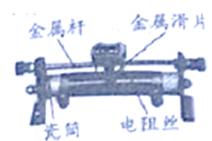

2020年北京市中考物理试题 · 选择题 第1、2、3、4、5题 · 对应解析
1.如图所示的滑动变阻器上标记的各部件中，通常情况下，属于绝缘体的是（ ）

A. 金属杆B. 瓷筒C. 电阻丝D. 金属滑片
【答案】B
【解析】
【详解】ACD．金属杆、电阻丝和金属滑片的材料是金属，容易导电，属于导体，故ACD不符合题意；
B．瓷筒的材料是陶瓷，不容易导电，属于绝缘体，故B符合题意。
故选B。
2.如图所示的光现象中由于光的反射形成的是（ ）
A.  桥在水中形成的倒影
桥在水中形成的倒影
B.  日晷上呈现针的影子
日晷上呈现针的影子
C.  透过放大镜看到放大的字
透过放大镜看到放大的字
D.  人透过水球所成的像
人透过水球所成的像
【答案】A
【解析】
【详解】A．桥在水中形成的倒影，属于平面镜成像，是光的反射形成的，故A符合题意；
B．日晷面上呈现晷针的影子是由光的直线传播形成的，故B不符合题意；
C．透过放大镜看到放大的字，属于凸透镜成像，是由于光的折射形成的，故C不符合题意；
D．水球相当于凸透镜，人透过水球成的像，是光的折射形成的，故D不符合题意。
故选A
3.如图所示，正在使用的四种工具，属于费力杠杆的是（ ）
A.  羊角锤
羊角锤
B.  核桃夹
核桃夹
C.  园艺剪
园艺剪
D.  食品夹
食品夹
【答案】D
【解析】
【详解】A．羊角锤在使用过程中，动力臂大于阻力臂，属于省力杠杆，不符合题意；
B．核桃夹在使用过程中，动力臂大于阻力臂，属于省力杠杆，不符合题意；
C．园艺剪在使用过程中，动力臂大于阻力臂，属于省力杠杆，不符合题意；
D．食品夹在使用的过程中，阻力臂大于动力臂，属于费力杠杆，符合题意。
故选D。
4.为了观察光的直线传播，将一束单色光从玻璃槽的外侧由左侧倾斜向上射入盐水中，但光在盐水中并不是沿着直线传播，而是发生了弯曲，如图所示。这是由于（ ）

A. 光从空气到玻璃发生了折射
B. 盐水不均匀使光发生了弯曲
C. 光发生了色散
D. 光从玻璃到盐水发生了折射
【答案】B
【解析】
【详解】玻璃槽中盐水不均匀了，越深密度越大，光在不均匀的盐水中会发生折射现象，因此光在盐水中并不是沿着直线传播，而是发生了弯曲。
故选B。
5.隆冬，滴水成冰的过程中，发生的物态变化是（ ）
A. 熔化B. 凝固C. 液化D. 升华
【答案】B
【解析】
【详解】滴水成冰的过程中，物质由液态变成固态，属于凝固现象。
故选B。